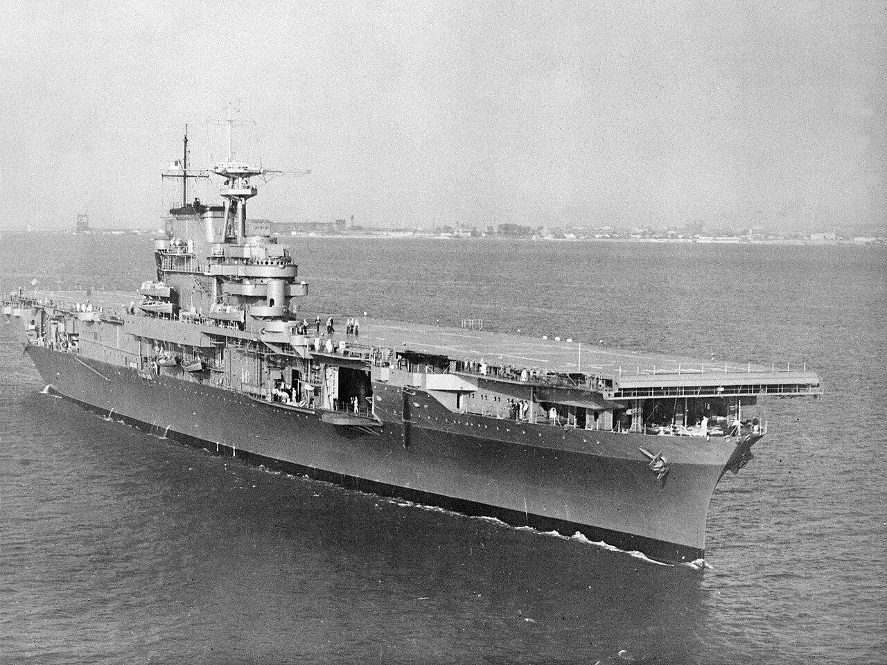
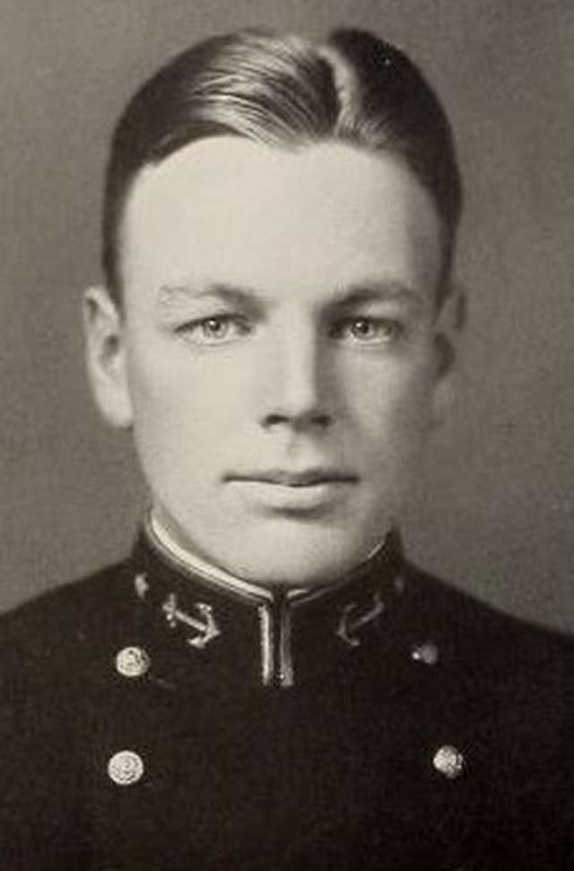
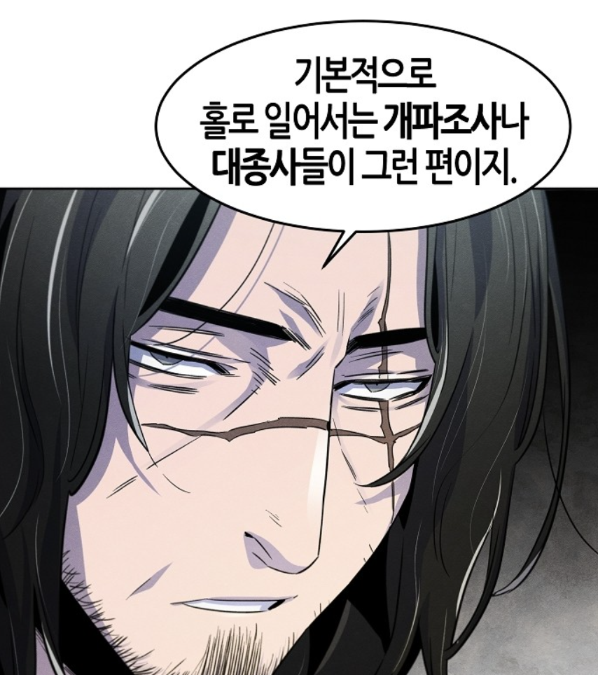
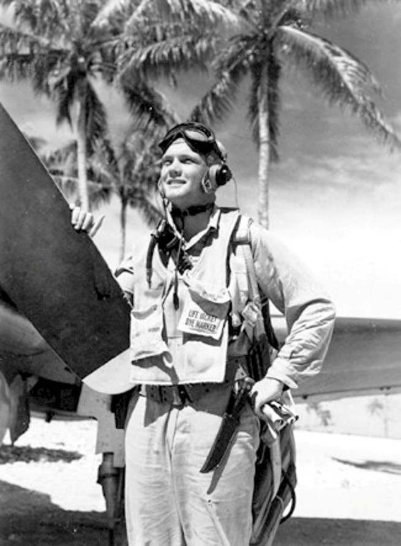
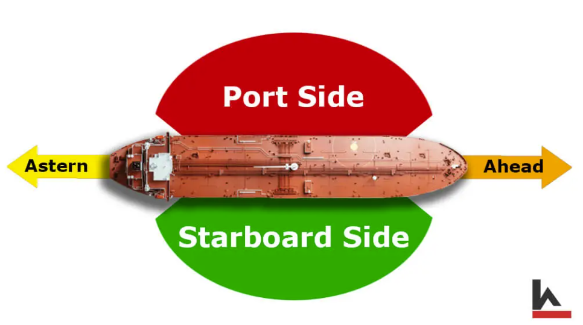
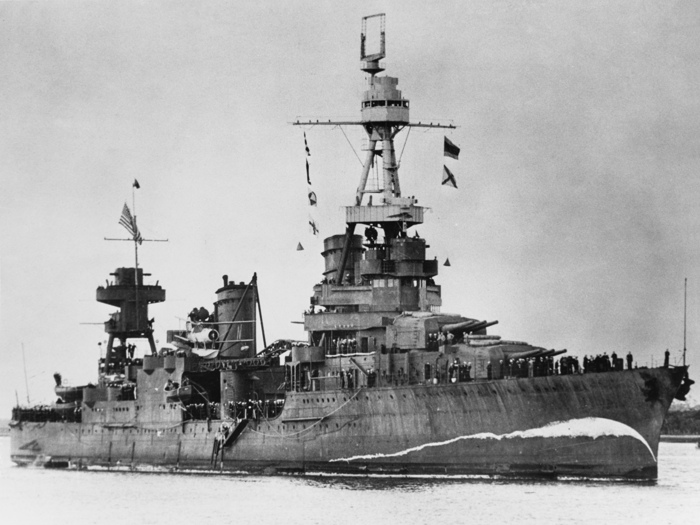

산타 크루즈에서의 레이더 이야기 (3) - 개파조사와 그의 수제자
게시: 2024-04-25T06:30:58+09:00
<어서와, 실전은 처음이지?> 이렇게 일본해군 기동부대를 치러 날아가던 미해군 함재기들은 모함을 향해 날아가는 일본해군 함재기들의 대편대를 목격하고는 즉각 모함들을 향해 무전을 날려 '그쪽으로 적기들이 날아간다'라고 알려줌. 덕분에 USS Enterprise와 USS Hornet은 레이더가 적기를 탐지하기도 전에 바싹 긴장하고 대비. 그러니 미리 유도된 CAP 전투기들에 의해 거의 완벽하게 요격이 가능했을 것.

(USS Hornet (CV-8, 2만5천톤, 32노트)는 요크타운 및 엔터프라이즈와 함께 Yorktown-class 항모 3척 중 하나. 이 세자매 중 종전시까지 살아남은 것은 엔터프라이즈 뿐. 이 사진은 1941년 10월의 모습인데, 아직 마스트에 CXAM 레이더 안테나가 없는 것을 볼 수 있음. 그게 설치된 시기는 미드웨이 해전 직후인 1942년 6월의 일.) 더군다나 산타 크루즈 해전이 벌어질 때 USS Enterprise와 USS Hornet에는 모두 특별한 장교들이 FDO (Fighter Direction Officer, 레이더 전투기 관제사)를 맡고 있었음. 엔터프라이즈의 FDO는 Jack Griffin 중령이었는데, 바로 하와이에 있는 미해군 태평양 함대 전체의 레이더 관제사 학교 책임자. 엔터프라이즈의 관제사 자리가 잠시 공석이 되자, 급한 대로 최고 권위자를 모셔온 것. 호넷의 FDO인 Alan F. Fleming 대위는 더욱 기구한 사연으로 FDO가 된 사람. 원래 미드웨이 해전 당시 호넷의 비행갑판 책임자였던 플레밍 대위는 비효율적인 전투기 관제에 대해 잔뜩 불평을 늘어놓는 사람이었는데, 하도 불평이 많자 지휘부에서 '그럼 니가 하면 되겠네, 전투기 관제' 라며 FDO로 임명했던 것. 더욱 기구한 운명은 그렇게 FDO로 임명되어 관제사 학교로 간 플레밍 대위를 최근 몇 개월 동안 훈련시켰던 사람이 그리핀 중령. 즉 스승과 제자가 나란히 실전 전투기 관제에 투입된 것.

(플레밍(Allan Foster Fleming) 대위의 해군사관학교 졸업사진. 역시 해군 조종사 출신이던 그는 산타 크루즈 해전에서 몇 개월 입원할 정도로 부상을 입었으나 결국 다시 다른 항모의 FDO로 복귀하여 여러 훈장을 탔으며 나중에는 그리핀 중령의 뒤를 이어 미태평양 함대의 레이더 전술 학교장이 되었음. 종전 이후에는 요직을 거쳐 해군 소장까지 진급.) 그러나 이렇게 개파조사(開派祖師) 장문인과 그 수제자가 콤비를 이룬 산타 크루즈 해전은 여태까지의 모든 항모전, 즉 산호해 해전, 미드웨이 해전, 동솔로몬 해전을 통틀어 최악의 레이더 전투기 관제로 기록됨. 대체 왜 그랬을까? 일단, 그리핀 중령은 레이더 관제의 이론 및 훈련에 있어 권위자이긴 했지만 정작 실전에서 전투기 관제를 해본 경험은 없었음.

(개파조사라는 단어는 무협지 읽으시는 분들은 잘 아실 것. 미해군에서의 레이더 전술을 사실상 스스로 창시했으니 그리핀 중령은 개파조사라는 칭호가 어울리는 인물. 그러나 이 산타 크루즈 해전에서의 엉망진창 지휘가 발목을 잡았는지 그리핀 중령은 끝내 고위직으로는 승진하지 못한 모양. 구글링을 열심히 해봐도 제독 계급에 올랐다는 이야기를 찾지 못함. 윗짤은 네이버 금요일 웹툰, '광마회귀'. 나중에 퇴직하고 나면 저런 무협지 써보는 것이 꿈인데, 재주가 없어서 저런 명작은 못 쓸 듯.) <누구 목소리지?> 오전 8시30분, 미리 경고를 받은 엔터프라이즈와 호넷은 미리 와일드캣 전투기들을 22대나 띄워놓고 일본 함재기들을 맞이할 준비를 함. 이들은 그리핀의 지시에 따라 3km 상공에서 대기. 하필 그 고도를 택한 이유는 원래 조종사 출신이었던 그리핀이 조종사들의 애로 사항을 잘 알고 있었기 때문. 그보다 더 높은 고도로 올라가려면 산소마스크를 써야 하는데, 그게 조종사들의 피로도를 확 높이는 요인이었던 것. 게다가 연료나 탄약처럼 산소 잔량도 CAP 전투기의 체공 시간에 중요한 요소였으므로 아낄 수 있으면 아끼는 것이 좋았음. 그리핀은 언제든 필요할 때 고도를 높이도록 유도하면 된다고 생각한 것.

(WW2 당시엔 산소마스크를 썼다 벗었다 했다는데, 마스크를 벗었을 때는 마이크는 어떻게 했을까? 당시엔 저렇게 throat microphone을 사용. Throat microphone은 원래 WW1 때 개발된 것으로서, 입이 아니라 목청에서 울리는 진동을 통해 마이크로 음성을 송신하는 장치. 이 장치를 쓰면 좋은 점은 사실 산소마스크를 쓴 상태에서도 쓸 수 있다는 점이 아니라 시끄러운 조종석에서도 소음은 대부분 제거되고 목소리만 전송된다는 점. 그러나 당시엔 아직 기술력이 부족했는지 결국 저 throat microphone의 성능은 그다지 좋지 못했고, 그래서 미해군에서는 나중에는 throat microphone을 포기하고 그냥 막대기 형태로 입가에 마이크를 들이대는 boom mike를 이용했고, 산소마스크 안쪽에 별도 마이크를 집어넣는 방식을 채택하기도 했다고. 저 사진은 육군항공대용 T-30 throat microphone을 목에 두르고 있는 어떤 미해병대 조종사의 모습.) 그러나 당장 당혹스러운 상황이 생김. 분명히 일본 함재기들이 레이더 탐지거리 안에 들어올 시간이 지났는데, CXAM 레이더의 스코프에는 아무것도 걸리지 않는 것. 이런 상황은 호그와트, 아니 하와이 레이더 학교에서 레이더 전술을 가르치던 그리핀도 예상하지 못했던 것. '이것들이 레이더에 탐지되지 않는 저고도로 침투하나?'라고 생각하던 순간, 이미 온갖 교신으로 가뜩이나 시끄럽던 조종사들의 무전 주파수에서 "적기가 좌현 쪽에서 접근 중"이라는 아군 조종사 목소리가 들림.

(항상 헷갈리기 쉬운 port side와 starboard side) 아직 적기의 정확한 방향을 파악하지 못한 상태였으므로 엔터프라이즈 상공의 CAP 전투기들은 엔터프라이즈 상공에서 크게 원을 그리며 선회하고 있었는데, 그리핀은 그 전투기들 중 한 대가 적기를 보았고, 그 '좌현(port)'이란 당연히 눈에 보이는 엔터프라이즈의 좌현을 뜻하는 것이라고 판단. 그리핀은 속으로 '이것들이 그동안의 가르침을 무시하고 누가 말하는지 자신의 편대 번호를 밝히지도 않았고, 270도 등의 방위각 대신 좌현 우현 따위의 비전문적 용어로 통신을 한다'고 혀를 찼음. 그러나 당장 자신도 당황한 상황에서 조종사들은 더욱 당황해서 그랬을 것으로 짐작하며 CAP 전투기 중 일부를 엔터프라이즈의 좌현 쪽으로 보내 적기를 탐색하게 함. 그러나 당시 엔터프라이즈는 서쪽으로 달리고 있었으므로 좌현은 남쪽. 일본 함대가 있을 것으로 예상되는 북서쪽과는 정반대 방향. 그리핀도 그것이 좀 이상하다고는 생각되었으나 폭격기들이 전술상 빙 돌아 우회하는 경우는 종종 있었으므로 그대로 파견. 하지만 역시나 그럴 리가 없었음. 그리핀이 들었던 '좌현에 적기 출현'이라는 교신은 엔터프라이즈 상공의 전투기 조종사 목소리가 아니었고, 저 멀리 북쪽으로 날아가는 미해군 공격편대에서 들려온 소리였음. 역시나 임시 관제사로 갑작스레 부임하다 보니, 그리핀은 휘하의 조종사들과 익숙해질 시간이 전혀 없었고, 따라서 그들의 목소리는 물론 말투나 용어 선택 등을 거의 몰랐기 때문에 발생했던 착각. 그러니 엔터프라이즈 좌현으로 CAP 전투기들 일부를 날려보낸 것은 공연한 전력 낭비. <내 레이더에만 보이는 거였어?> 정작 미해군 항모전단을 향해 날아오던 일본해군 함재기들은 북서쪽에서 접근 중이었음. 마침내 8시 41분, 미해군 항모전단으로부터 110km까지 접근했을 때, 항모전단 내에 있던 USS Northampton (CA-26, 1만톤, 32노트)의 CXAM 레이더에 커다란 편대가 또렷이 잡힘. 그러나 노쓰햄튼에서는 몰랐지만, 그렇게 레이더로 적기를 포착한 것은 함대 전체에서 노쓰햄튼 뿐이었음. 엔터프라이즈도 호넷도, 모두 CXAM 레이더에서 아무것보 보지 못했음.

(중순양함 USS Northampton (CA-26)의 1941년 7월 사진. 노쓰햄튼은 1940년 미해군이 개발한 CXAM 레이더를 가장 먼저 장착한 6척의 군함 중 하나였음. 그래서 아직 미국의 참전 이전인 1941년 7월 사진에서도 저렇게 CXAM 레이더의 bedspring 안테나가 마스트 꼭대기에 달려있는 것. 그나저나 저 함수 흘수선에 그려진 파도 모양의 그림은 적 잠수함에게 마치 이 순양함이 전속력으로 달리고 있는 것처럼 보이게 만드려는 일종의 위장도색. 잠수함이 정확하게 어뢰를 쏘려면 목표함의 속도를 알아야 하는데, 당시엔 저렇게 함수의 파도 모양을 보고 그 속도를 짐작했기 때문.)
노쓰햄튼에서는 당연히 이 편대를 엔터프라이즈와 호넷도 보고 있을 것이라고 생각하고는 이 중대하고 긴박한 정보를 한가하게도 깃발 신호를 통해서 형식적으로 알림. 가능한한 무선 침묵을 지켜야 했기 때문. 호넷에서는 신호수가 이 깃발 신호를 보고 해석하여 종이에 쓴 뒤 함교로 올려보냈는데, 거기까지 약 10분간의 소중한 시간이 다 날아감. 엔터프라이즈는 호넷에서 약 15km 떨어진 곳에 있었으므로 아예 아무 소식도 듣지 못함. 결국 8시 55분, 노쓰햄튼의 깃발 신호 소식이 함교에 전달될 즈음, 이제서야 호넷의 CXAM 레이더 스코프에도 적기들이 포착됨 이때는 이미 적기가 60km까지 접근한 상황. 몇 분 뒤에는 엔터프라이즈에서도 적기를 포착. 대체 호넷과 엔터프라이즈에서는 왜 이렇게 레이더가 뒤늦게서야 적기를 포착했을까? 여기엔 뜻밖의 이유가 있었음. (다음 주에 계속)